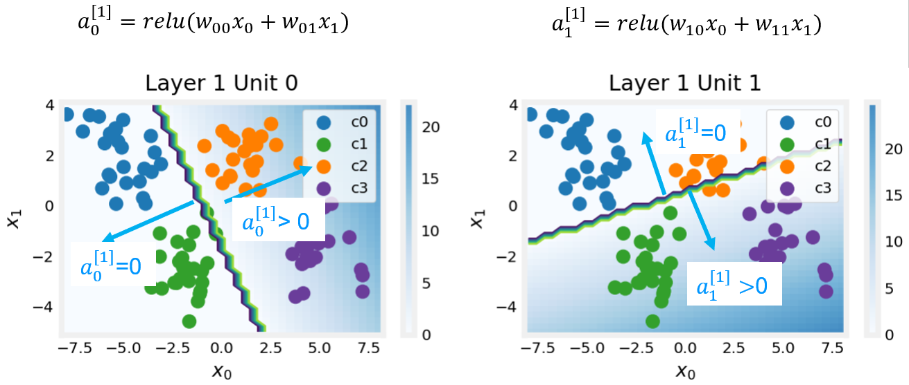

This notebook wille explore neural network with multi class classification
This Multi-class Classification is part of DeepLearning.AI course: Machine Learning Specialization / Course 2: Advanced Learning Algorithms: Multiclass classification You will build and train a neural network with TensorFlow to perform multi-class classification in the second course of the Machine Learning Specialization. Ensure that your machine learning models are generalizable by applying best practices for machine learning development. You will build and train a neural network using TensorFlow to perform multi-class classification in the second course of the Machine Learning Specialization. Implement best practices for machine learning development to ensure that your models are generalizable to real-world data and tasks. Create and use decision trees and tree ensemble methods, including random forests and boosted trees.
This is my learning experience of data science through DeepLearning.AI. These repository contributions are part of my learning journey through my graduate program masters of applied data sciences (MADS) at University Of Michigan, DeepLearning.AI, Coursera & DataCamp. You can find my similar articles & more stories at my medium & LinkedIn profile. I am available at kaggle & github blogs & github repos. Thank you for your motivation, support & valuable feedback.
These include projects, coursework & notebook which I learned through my data science journey. They are created for reproducible & future reference purpose only. All source code, slides or screenshot are intellectual property of respective content authors. If you find these contents beneficial, kindly consider learning subscription from DeepLearning.AI Subscription, Coursera, DataCamp
Optional Lab - Multi-class Classification
1.1 Goals
In this lab, you will explore an example of multi-class classification using neural networks.
1.2 Tools
You will use some plotting routines. These are stored in lab_utils_multiclass_TF.py in this directory.
Code
import numpy as npimport matplotlib.pyplot as plt%matplotlib widgetfrom sklearn.datasets import make_blobsimport tensorflow as tfdevices = tf.config.list_physical_devices()print(devices)from tensorflow.keras.models import Sequentialfrom tensorflow.keras.layers import Densenp.set_printoptions(precision=2)from lab_utils_multiclass_TF import*import logginglogging.getLogger("tensorflow").setLevel(logging.ERROR)tf.autograph.set_verbosity(0)
# Specify the GPU device to usegpus = tf.config.list_physical_devices('GPU')if gpus:# Set the GPU memory growth to Truetry: tf.config.experimental.set_memory_growth(gpus[0], True)exceptRuntimeErroras e:print(e)
2.0 Multi-class Classification
Neural Networks are often used to classify data. Examples are neural networks: - take in photos and classify subjects in the photos as {dog,cat,horse,other} - take in a sentence and classify the ‘parts of speech’ of its elements: {noun, verb, adjective etc..}
A network of this type will have multiple units in its final layer. Each output is associated with a category. When an input example is applied to the network, the output with the highest value is the category predicted. If the output is applied to a softmax function, the output of the softmax will provide probabilities of the input being in each category.
In this lab you will see an example of building a multiclass network in Tensorflow. We will then take a look at how the neural network makes its predictions.
Let’s start by creating a four-class data set.
2.1 Prepare and visualize our data
We will use Scikit-Learn make_blobs function to make a training data set with 4 categories as shown in the plot below.
/Users/kakamana/Library/CloudStorage/OneDrive-Personal/Datascience/Journey/DeepLearning.ai/Machine Learning Specialization/Advanced Learning Algorithms/lab_utils_multiclass_TF.py:63: UserWarning: No data for colormapping provided via 'c'. Parameters 'vmin', 'vmax' will be ignored
ax.scatter(X[idx, 0], X[idx, 1], marker=m,
Each dot represents a training example. The axis (x0,x1) are the inputs and the color represents the class the example is associated with. Once trained, the model will be presented with a new example, (x0,x1), and will predict the class.
While generated, this data set is representative of many real-world classification problems. There are several input features (x0,…,xn) and several output categories. The model is trained to use the input features to predict the correct output category.
Code
# show classes in data setprint(f"unique classes {np.unique(y_train)}")# show how classes are representedprint(f"class representation {y_train[:10]}")# show shapes of our datasetprint(f"shape of X_train: {X_train.shape}, shape of y_train: {y_train.shape}")
unique classes [0 1 2 3]
class representation [3 3 3 0 3 3 3 3 2 0]
shape of X_train: (100, 2), shape of y_train: (100,)
2.2 Model
This lab will use a 2-layer network as shown. Unlike the binary classification networks, this network has four outputs, one for each class. Given an input example, the output with the highest value is the predicted class of the input.
Below is an example of how to construct this network in Tensorflow. Notice the output layer uses a linear rather than a softmax activation. While it is possible to include the softmax in the output layer, it is more numerically stable if linear outputs are passed to the loss function during training. If the model is used to predict probabilities, the softmax can be applied at that point.
Code
tf.random.set_seed(1234) # applied to achieve consistent resultsmodel = Sequential( [ Dense(2, activation ='relu', name ="L1"), Dense(4, activation ='linear', name ="L2") ])
Metal device set to: Apple M2 Pro
The statements below compile and train the network. Setting from_logits=True as an argument to the loss function specifies that the output activation was linear rather than a softmax.
WARNING:absl:At this time, the v2.11+ optimizer `tf.keras.optimizers.Adam` runs slowly on M1/M2 Macs, please use the legacy Keras optimizer instead, located at `tf.keras.optimizers.legacy.Adam`.
WARNING:absl:There is a known slowdown when using v2.11+ Keras optimizers on M1/M2 Macs. Falling back to the legacy Keras optimizer, i.e., `tf.keras.optimizers.legacy.Adam`.
2023-04-30 19:41:08.828617: W tensorflow/tsl/platform/profile_utils/cpu_utils.cc:128] Failed to get CPU frequency: 0 Hz
Above, the decision boundaries show how the model has partitioned the input space. This very simple model has had no trouble classifying the training data. How did it accomplish this? Let’s look at the network in more detail.
Below, we will pull the trained weights from the model and use that to plot the function of each of the network units. Further down, there is a more detailed explanation of the results. You don’t need to know these details to successfully use neural networks, but it may be helpful to gain more intuition about how the layers combine to solve a classification problem.
Code
# gather the trained parameters from the first layerl1 = model.get_layer("L1")W1,b1 = l1.get_weights()
Code
# plot the function of the first layerplt_layer_relu(X_train, y_train.reshape(-1,), W1, b1, classes)
/Users/kakamana/Library/CloudStorage/OneDrive-Personal/Datascience/Journey/DeepLearning.ai/Machine Learning Specialization/Advanced Learning Algorithms/lab_utils_multiclass_TF.py:63: UserWarning: No data for colormapping provided via 'c'. Parameters 'vmin', 'vmax' will be ignored
ax.scatter(X[idx, 0], X[idx, 1], marker=m,
/Users/kakamana/Library/CloudStorage/OneDrive-Personal/Datascience/Journey/DeepLearning.ai/Machine Learning Specialization/Advanced Learning Algorithms/lab_utils_multiclass_TF.py:63: UserWarning: No data for colormapping provided via 'c'. Parameters 'vmin', 'vmax' will be ignored
ax.scatter(X[idx, 0], X[idx, 1], marker=m,
Code
# gather the trained parameters from the output layerl2 = model.get_layer("L2")W2, b2 = l2.get_weights()# create the 'new features', the training examples after L1 transformationXl2 = np.maximum(0, np.dot(X_train,W1) + b1)plt_output_layer_linear(Xl2, y_train.reshape(-1,), W2, b2, classes, x0_rng = (-0.25,np.amax(Xl2[:,0])), x1_rng = (-0.25,np.amax(Xl2[:,1])))
/Users/kakamana/Library/CloudStorage/OneDrive-Personal/Datascience/Journey/DeepLearning.ai/Machine Learning Specialization/Advanced Learning Algorithms/lab_utils_multiclass_TF.py:63: UserWarning: No data for colormapping provided via 'c'. Parameters 'vmin', 'vmax' will be ignored
ax.scatter(X[idx, 0], X[idx, 1], marker=m,
/Users/kakamana/Library/CloudStorage/OneDrive-Personal/Datascience/Journey/DeepLearning.ai/Machine Learning Specialization/Advanced Learning Algorithms/lab_utils_multiclass_TF.py:63: UserWarning: No data for colormapping provided via 'c'. Parameters 'vmin', 'vmax' will be ignored
ax.scatter(X[idx, 0], X[idx, 1], marker=m,
/Users/kakamana/Library/CloudStorage/OneDrive-Personal/Datascience/Journey/DeepLearning.ai/Machine Learning Specialization/Advanced Learning Algorithms/lab_utils_multiclass_TF.py:63: UserWarning: No data for colormapping provided via 'c'. Parameters 'vmin', 'vmax' will be ignored
ax.scatter(X[idx, 0], X[idx, 1], marker=m,
/Users/kakamana/Library/CloudStorage/OneDrive-Personal/Datascience/Journey/DeepLearning.ai/Machine Learning Specialization/Advanced Learning Algorithms/lab_utils_multiclass_TF.py:63: UserWarning: No data for colormapping provided via 'c'. Parameters 'vmin', 'vmax' will be ignored
ax.scatter(X[idx, 0], X[idx, 1], marker=m,
Explanation
Layer 1 
These plots show the function of Units 0 and 1 in the first layer of the network. The inputs are (\(x_0,x_1\)) on the axis. The output of the unit is represented by the color of the background. This is indicated by the color bar on the right of each graph. Notice that since these units are using a ReLu, the outputs do not necessarily fall between 0 and 1 and in this case are greater than 20 at their peaks. The contour lines in this graph show the transition point between the output, \(a^{[1]}_j\) being zero and non-zero. Recall the graph for a ReLu : The contour line in the graph is the inflection point in the ReLu.
Unit 0 has separated classes 0 and 1 from classes 2 and 3. Points to the left of the line (classes 0 and 1) will output zero, while points to the right will output a value greater than zero. Unit 1 has separated classes 0 and 2 from classes 1 and 3. Points above the line (classes 0 and 2 ) will output a zero, while points below will output a value greater than zero. Let’s see how this works out in the next layer!
Layer 2, the output layer
The dots in these graphs are the training examples translated by the first layer. One way to think of this is the first layer has created a new set of features for evaluation by the 2nd layer. The axes in these plots are the outputs of the previous layer \(a^{[1]}_0\) and \(a^{[1]}_1\). As predicted above, classes 0 and 1 (blue and green) have \(a^{[1]}_0 = 0\) while classes 0 and 2 (blue and orange) have \(a^{[1]}_1 = 0\). Once again, the intensity of the background color indicates the highest values. Unit 0 will produce its maximum value for values near (0,0), where class 0 (blue) has been mapped. Unit 1 produces its highest values in the upper left corner selecting class 1 (green). Unit 2 targets the lower right corner where class 2 (orange) resides. Unit 3 produces its highest values in the upper right selecting our final class (purple).
One other aspect that is not obvious from the graphs is that the values have been coordinated between the units. It is not sufficient for a unit to produce a maximum value for the class it is selecting for, it must also be the highest value of all the units for points in that class. This is done by the implied softmax function that is part of the loss function (SparseCategoricalCrossEntropy). Unlike other activation functions, the softmax works across all the outputs.
You can successfully use neural networks without knowing the details of what each unit is up to. Hopefully, this example has provided some intuition about what is happening under the hood.
 This lab will use a 2-layer network as shown. Unlike the binary classification networks, this network has four outputs, one for each class. Given an input example, the output with the highest value is the predicted class of the input.
This lab will use a 2-layer network as shown. Unlike the binary classification networks, this network has four outputs, one for each class. Given an input example, the output with the highest value is the predicted class of the input. The contour line in the graph is the inflection point in the ReLu.
The contour line in the graph is the inflection point in the ReLu.